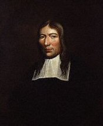

Friday, February the 3rd, 2012
back to: title, date or indexes
Today is the first day of the Muggletonian Great Holiday, celebrated on the third, fourth and fifth of February each year. On those three days in 1652, the tailor John Reeve (1608–1658) received his commission from God, and was told that his cousin Lodowicke Muggleton (1609–1698) was to be his “mouth”. Reeve learned that he and Muggleton were the two witnesses referred to in Revelations 11:3, and that God had empowered them to pronounce upon the fate of individuals. As Muggleton wrote in his 1663 tract The Neck of The Quakers Broken, “He hath put the two-edged Sword of His Spirit into my Mouth, that whosoever I pronounce cursed through my Mouth, is cursed to Eternity”.
It was long thought that, of all the sects which sprang up in the English Civil War period, only the Quakers survived into the twentieth century. During the 1970s, however, one Philip Noakes came to light in Kent, a living Muggletonian in possession of a huge archive of material covering the sect's entire history.
The Muggletonians believed that human reason was unclean. This led them to reject physical science. They refused to accept the laws of gravity or the rules of mathematics, and they considered astronomy to be wrong. The stars, they said, were only as big as God made them appear from earth. In later years, Muggletonians banned hot air ballooning, because the balloons would crash into the sky, a solid band around the earth.

Portrait of Lodowicke Muggleton by William Wood, circa 1674 (NPG)
NOTE : My thanks to Andy Hopton, whose 1988 essay in Small Press Gleanings is my source—and was my introduction to the sect.